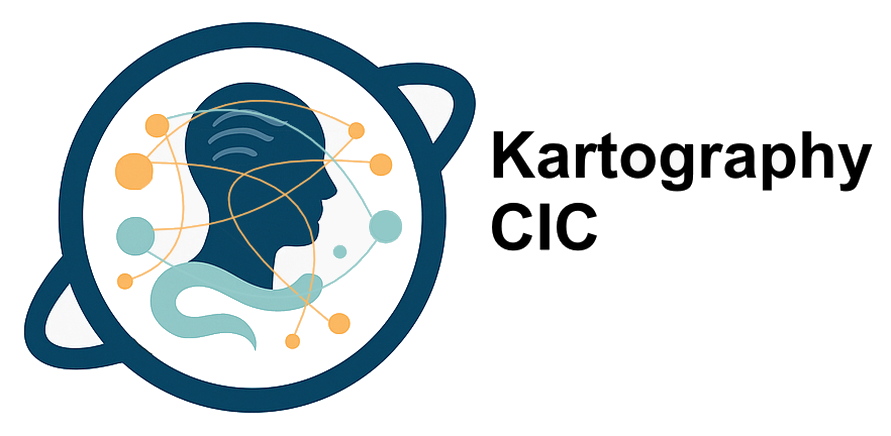

At Kartography CIC, we explore the intersections and interdepencies of the humanities and sciences—creating knowledge through practice and research, processual analysis, and innovation. We believe that data and meaning go hand in hand, and that real insight comes from collaboration across disciplines.
Our systems delve into history and society to inform how we see the present and imagine the future. Through historical research, creative media, and participatory projects, we bring human and social reality to the forefront.
We use semantic data, cognitive mapping, and processual thinking to analyze complex challenges. Synthesising different space-times, levels of generality and vantage points, we apply scientific digital tools to support informed interpretation and decision-making.
Our projects are rooted in the communities we serve. We prioritize co-design, accessibility, and equity in all our work, ensuring that everyone has a voice in shaping the knowledge we build together.
Kartography is a consultancy specialising in the design and implementation of semantic knowledge bases. We help organisations transform how they structure, connect, and use information—aligning technology with real-world knowledge processes.
Whether building from scratch or evolving existing systems, we create dynamic, adaptable platforms that support research, decision-making, education, and collaboration. Our open-source ResearchSpace system breaks from rigid data models, enabling meaningful, flexible knowledge base systems.
Our team brings deep interdisciplinary experience—from ethnography to conservation science—shaped by work with institutions like the British Museum, National Gallery, and Royal Academy of Arts. We understand how humanities and social science research operates, and we use that insight to craft digital tools that reflect how people actually think and work.
We offer:
Kartography is the original development team behind ResearchSpace, a semantic platform shaped by over a decade of critical research into digital methods in the humanities. Our goal is simple: empower users to build knowledge, not just manage data.
📧 Contact us: info@kartography.org
ResearchSpace is not just a digital platform — it is a dynamic process of sense-making, designed to evolve alongside the inquiries and communities it serves. Rooted in the material processual principles, and supported by CIDOC CRM, ResearchSpace facilitates the transformation of historical evidence into contextualised knowledge in a native Linked Data format.
From a processual perspective, ResearchSpace operates through the following core phases:
This approach emphasizes that knowledge is not a product, but a practice. ResearchSpace supports that practice by acting as a temporal scaffold—a structure that adapts to changing insights, collaborative contributions, and the rhythms of long-term socio-historical research.